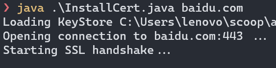

| 环境 | 版本 |
|---|---|
| 操作系统 | Win10 x64 |
| JDK | AdoptOpenJDK_x64 11 (主)、Oracle JDK8_x64 |
| 文本编辑器 (IDE) | VSCode |
| Shell | PowerShell 7 ( 简称 pwsh ) |
| Gradle | 项目的 Wrapper |
| Socks 服务 | localhost:10808 |
开始
首先，我不为 Java 设置任何代理设置或额外参数。
我以游戏 Minecraft Forge 模组开发的典型 Java Gradle 构建项目为例子，进行演示。请读者提前去官网下载开发包并解压：
{kind=link}
在解压后的目录打开 VSCode, 然后在终端内输入 ./gradlew 走起：
{kind=link}
此时屏幕输出 Starting Deamon ... 代表 Gradle 服务运行中
{kind=link}
出错范例分析
报错，但提示过于简单。使用指令 ./gradlew --stacktrace 再运行一次：
{kind=link}
发现这是证书问题
{kind=link}
大名鼎鼎的 jcenter 库不可能宕机，导致 Read timed out，信号肯定被干扰了。
开启代理
下面配置 Java 代理，设置环境变量
$env:JAVA_TOOL_OPTIONS="-DsocksProxyHost=localhost -DsocksProxyPort=10808"
我推荐使用临时环境变量的方式，使代理再终端运行期内有效：
修改 pwsh profile 里，以后直接运行
Use-Proxy即可 ( 在 > pwsh6 开始，可以输入u-p+ 多次tab快速补全 )在 pwsh 中执行
code $profile, 输入并保存：function Use-Proxy { $env:JAVA_TOOL_OPTIONS = "-DsocksProxyHost=localhost > -DsocksProxyPort=10808" }
重启终端会话，执行 Use-Proxy 后再运行 java:
{kind=link}
如图说明代理已配置。
十分注意: 我认为 deamon 守护进程的运作模式可能与代理发生意向不到的作用，所以我推荐你关闭守护进程来进行操作，直到项目能正常构建为止。
解决证书问题
报错特征：
javax.net.ssl.SSLHandshakeException: PKIX path building failed: sun.security.provider.certpath.SunCertPathBuilderException: unable to find valid certification path to requested target
首先推荐大家下载两个开源项目：
- Java SSL 测试工具: https://github.com/MichalHecko/SSLPoke
- 根据所给 URL 自动下载签名证书并录入证书库文件: https://github.com/escline/InstallCert
- 点击项目 SSLPoke 下的 release 下载 .jar 文件保存
- git clone InstallCert
- 推荐把 SSLPoke.jar 放到 InstallCert 同一目录下
- 在目录内打开终端
下面举个例子：如何解决访问 baidu.com 证书错误。
-
使用 SSLPoke 测试连接到百度
java -jar .\SSLPoke.jar <主机名> 443 -
执行
java .\InstallCert.java <主机名>下载网站证书java 11 版本一下必须先编译
.java后才能运行
-
小程序将输出所有证书列表，输入数字键自动导入证书。如果有多个网站证书，请重复步骤 3
-
成功效果：
{kind=link}
{kind=link}
其他故障排查
关闭 Gradle 后台守护进程
./gradlew --stop
一次性禁止：启动时带上参数 --no-daemon
永久禁止：在 gradle.properties 中写入 org.gradle.daemon=false
大功告成
输入 ./gradlew tasks
有问题我尽量期末有空后解答大家问题，我也发在 CSDN 上了，欢迎点赞收藏。